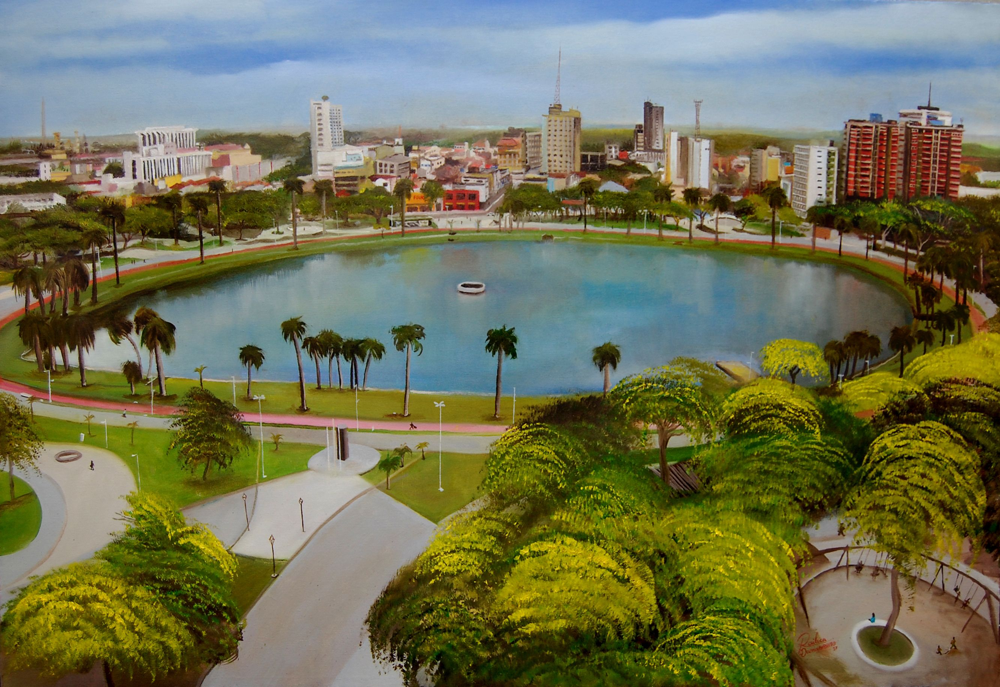
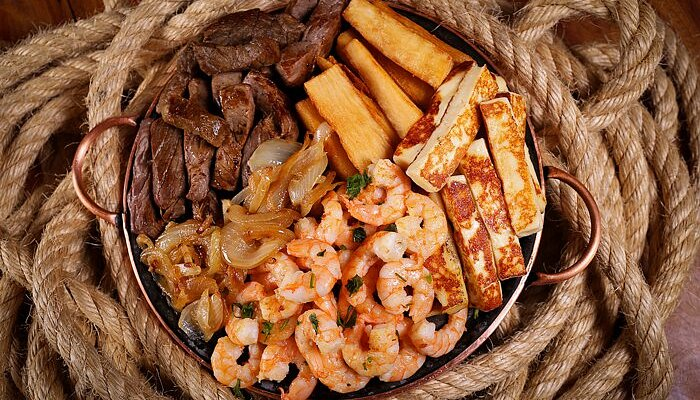

João Pessoa

João Pessoa, capital da Paraíba, é um destino turístico de grande relevância no Nordeste do Brasil, destacando-se por sua beleza natural, rica história e cultura vibrante. A cidade possui praias paradisíacas, como Tambaú e Cabo Branco, além de ser um dos maiores polos de ecoturismo da região, com áreas de preservação e parques urbanos. João Pessoa é também famosa por seu ambiente tranquilo e pela preservação de seu patrimônio histórico, o que a torna atraente tanto para os turistas em busca de lazer quanto para os interessados em cultura e história. Com um clima tropical agradável, é um destino popular o ano inteiro, sendo ainda menos saturada do que outras capitais nordestinas, o que confere uma experiência mais tranquila e autêntica ao visitante.
Principais pontos turísticos
- Praia de Tambaú
- Praia do Cabo Branco
- Centro Histórico
- Parque Solon de Lucena (ou Lagoa) 
- Estádio Almeidão
Localizada no centro da cidade, Tambaú é uma das praias mais conhecidas e frequentadas de João Pessoa. Com águas mornas e calmas, é ideal para quem busca lazer, além de contar com uma infraestrutura de bares e restaurantes.
A Feirinha de Tambaú é uma atração à parte, oferecendo artesanato local e produtos típicos da região.
Esta praia é famosa por suas falésias e pelo belíssimo pôr do sol, além de ser palco de diversas atividades ao ar livre. A Estátua de Tamandaré, localizada nesse litoral, é um ícone da cidade, assim como o Farol do Cabo Branco, que oferece uma vista deslumbrante da região.
O centro de João Pessoa preserva muitos edifícios coloniais e igrejas históricas, como a Igreja de São Francisco, que é um marco do barroco brasileiro e abriga um importante conjunto de arte sacra.
O Mosteiro de São Bento e o Palácio da Redenção, sede do governo do estado, também fazem parte desse complexo histórico.
Localizado no centro da cidade, o parque é um ponto de lazer, com um lago artificial onde é possível fazer passeios de pedalinho. Ao redor, há áreas verdes e espaços para caminhadas e relaxamento, sendo um local de grande apelo para os moradores e turistas.
Para os amantes de esportes, o Estádio Almeidão é um local importante, além de ser um ponto de encontro para eventos esportivos e culturais.
Principais pontos gastronômicos
- Feira de São Cristóvão
- Localização: Cabo Branco.
- Casa do Bacalhau
- Localização: Bairro Manaíra.
- Restaurante Mangai 
- Localização: Bairro Manaíra.
- Restaurante Nau
- Localização: Bairro Manaíra.

Almoço em família, reunião de negócios ou um jantar romântico a dois? No Porto 60, cada ocasião é servida com frescor, elegância e um toque de exclusividade. Viva momentos inesquecíveis em um ambiente que combina sabor e sofisticação.
Ambiente muito especial, elegante e uma atendimento impecável. Atendimento especializado e equipe prestativa.
A Casa do Bacalhau é um dos restaurantes que oferecem culinária europeia, com o tradicional bacalhau como ingrediente principal para os pratos do cardápio.
O local é bem agradável e oferece a quem chega aconchego e bom ambiente para conversas.
O Mangai é um dos estabelecimentos de culinária mais tradicionais dos restaurantes em João Pessoa. O cardápio é regado à comida brasileira, e o próprio espaço apresenta a quem o visita o aconchego característico ao nordestino.
No cardápio do Mangai, os clientes encontram pratos tradicionais da culinária brasileira, como o famoso salpicão e o feijão verde com carne de sol na nata.
Para quem gosta de frutos do mar, o Nau é uma das melhores opções para aproveitar uma culinária refinada e típica pessoense. O restaurante é mais sofisticado e ideal para quem deseja viver um momento inesquecível. Uma ótima pedida para momentos especiais, como um jantar romântico!
O Nau faz parte de uma franquia instalada em vários estados brasileiros.
Principais pontos culturais
- Festival de Música de João Pessoa
- Localização: Diversos locais da cidade.
- Museu da Cidade
- Localização: Centro de João Pessoa.
- Teatro Santa Roza
- Localização: Centro de João Pessoa.
- Festa de São João
- Localização: Centro da cidade.

Um dos maiores eventos culturais da cidade, o Festival de Música reúne artistas nacionais e internacionais e é uma vitrine para a música clássica, popular e regional. A programação é variada e inclui apresentações ao ar livre, shows e recitais.

O Museu da Cidade de João Pessoa é um importante centro cultural que tem como objetivo preservar e divulgar a história da cidade e da Paraíba. Localizado em um edifício histórico, o museu reúne um vasto acervo que abrange desde a fundação de João Pessoa até o desenvolvimento urbano e social da cidade ao longo dos anos. Através de exposições permanentes e temporárias, o museu oferece aos visitantes uma imersão na evolução cultural, política e econômica da capital paraibana.
Além disso, o espaço promove atividades educacionais e culturais, sendo um ponto de referência para quem deseja conhecer mais sobre a história e as tradições locais. O Museu da Cidade é, assim, um local essencial para quem quer entender a alma de João Pessoa e sua trajetória ao longo do tempo.
Considerado um dos mais antigos teatros do Brasil, o Teatro Santa Roza é um marco cultural em João Pessoa. O local oferece apresentações de teatro, dança, música e outros eventos culturais.
Sua arquitetura histórica e seu papel na vida cultural da cidade fazem dele um ponto turístico importante.
O São João de João Pessoa é um dos maiores e mais tradicionais festejos de São João no Nordeste. Durante o mês de junho, a cidade se enche de música, dança e folclore, com destaque para o forró e outras manifestações culturais como os Boi de Reis e os papangus.
Os festejos incluem apresentações em praças e ruas, trazendo turistas de todo o Brasil.